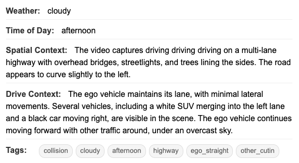

Instantly convert any camera data into high-fidelity 3D scenarios.
Eliminate manual scenario creation and build massive, diverse testing libraries to truly scale your validation efforts.
Transform thousands of hours of raw footage into structured, simulation-ready tests in minutes.
GenixCore automatically extracts and reconstructs every element—from object trajectories to spatial insights—delivering ready-to-use assets for your virtual testing environment.

Transform raw driving videos into ready-to-use test scenarios. Our depth models automatically reconstruct scenes in 3D and extract driving scenarios.
Automatically tag scenarios with driving context and environmental metadata for powerful search and filtering, allowing your team to instantly find rare and critical edge cases across petabytes of data.
Create countless variations from a single event. Automatically modify key parameters in a scenario to test more conditions, rapidly expanding your library with minimal effort.
Export scenarios in ASAM OpenSCENARIO format for easy simulator integration, with custom format support when needed.
From dashcams to surveillance footage—GenixCore extracts actionable test scenarios from any real-world video, automatically capturing the complexity that matters.
Upload your drive video to get sample results, or schedule a demo to discuss your specific needs.
Upload your drive video and get sample scenario extraction results back.
Discuss your specific use case and see how GenixCore fits your workflow.